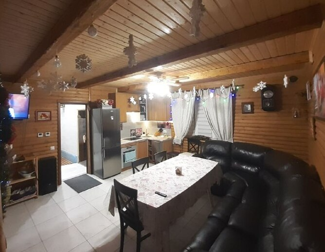

с.Чернилява
Працює цілодобово
Заклад розташований у селі Чернилява за адресою Центральна, 119. Наша сауна - це ідеальне місце, щоб відпочити та провести час в затишній атмосфері разом з друзями та близькими. Сама сауна розташована у приватному будинку з санвузлом та повністю обладнанною кухнею Також є можливість замовити вінники , котрі будуть запарені , та готові до використання У будинку є телевізор, безкоштовний інтернет, та дві спальні кімнати кімнати на другому поверсі
